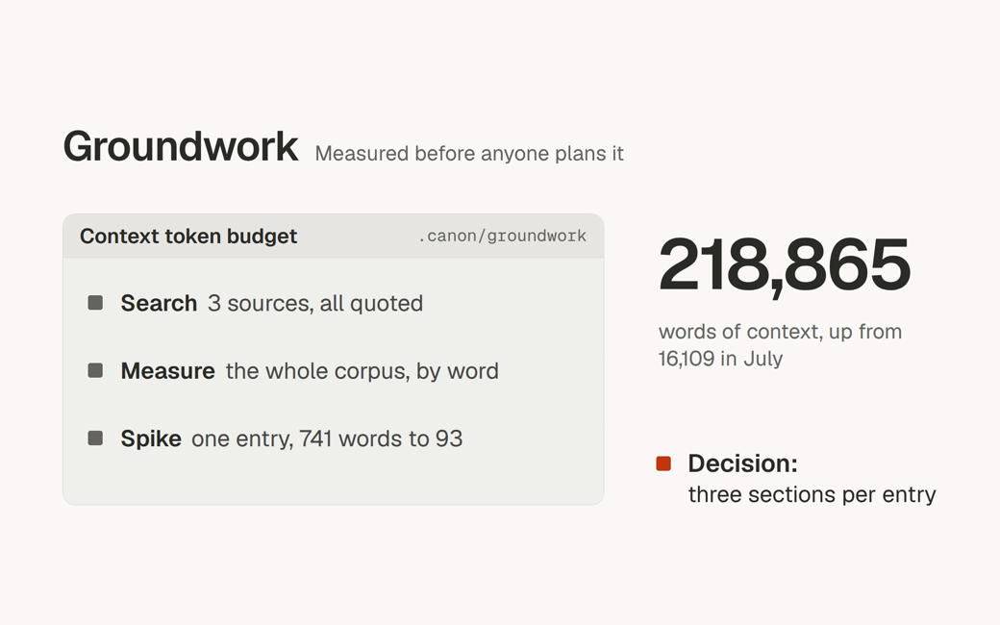
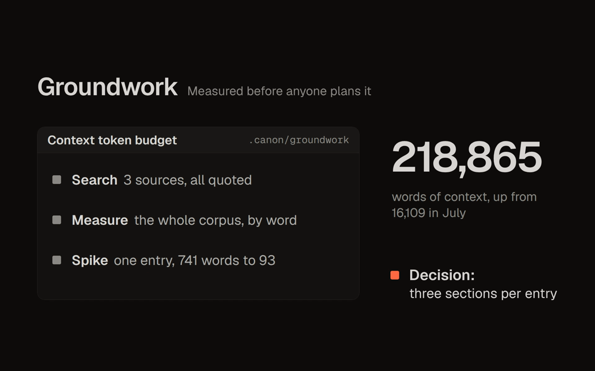

A CLI and Claude Code plugin that holds the work to established engineering practice, and installs the same setup in every repo.


The film follows one real change, from the question that started it to its merge as erclx/canon#2418. Here is each step, with what it left behind.
Context had grown from 16,109 words to 218,865. The track searched, measured, and spiked before it decided anything.
The plan names the files it touches and the test that proves them. Each open question carries a suggested answer, so a blank reply still moves.
An orchestrator places each plan on the board and starts a worker per change, each in its own worktree.
Rules load on the path being edited, and the gate runs every stage before the pull request opens.
A session that did not write the change reads it against the plan. The worker fixes what it finds, and the review closes only when nothing is left.
The task archives with its plan, and the board moves to the next row.
The skills land as /canon:<name>, and the CLI needs Bun on your path. canon runs on Linux and macOS.
Set up a repository with canon init, which lays down its rules, seeds, and configs.